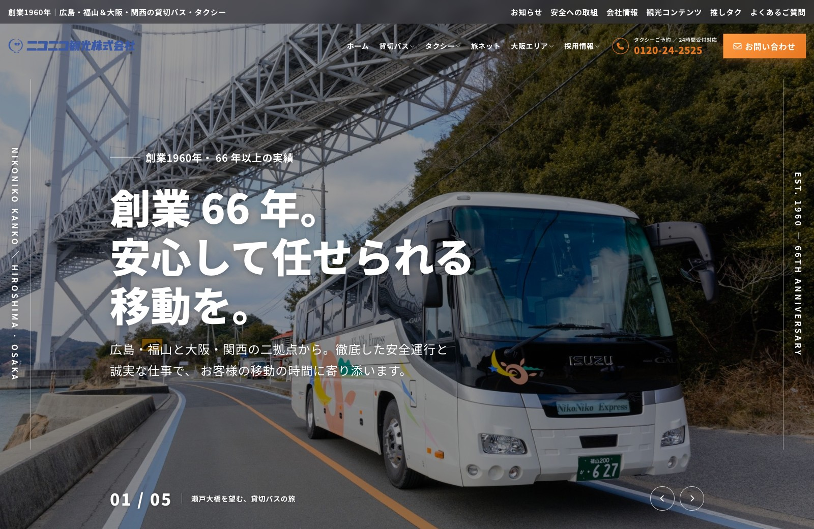
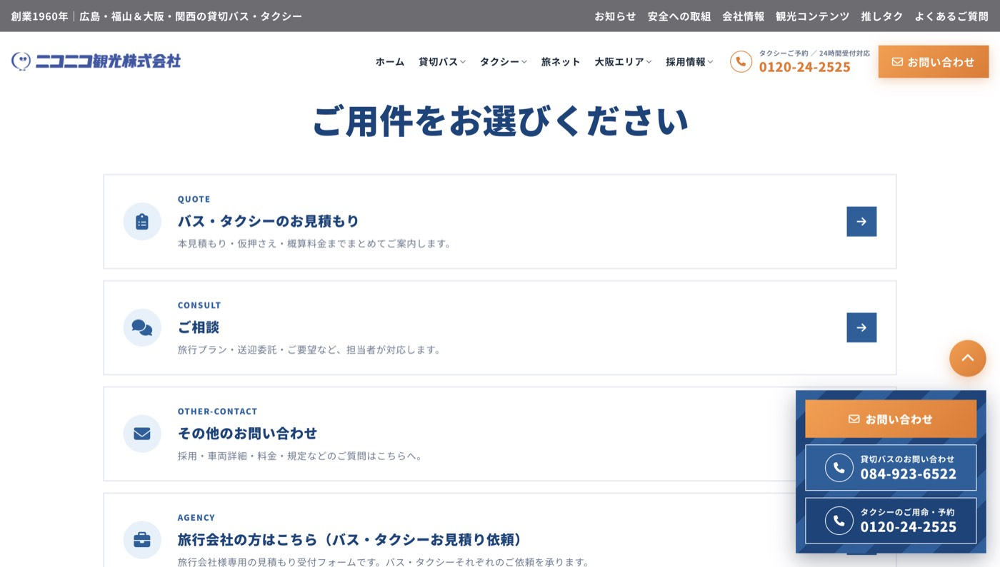

ニコニコ観光株式会社

サイトURL
作品概要
1960年創業、広島・福山と大阪・関西の二拠点で貸切バス・タクシーを運行するニコニコ観光株式会社のコーポレートサイトです。前職の制作会社で制作した、実際のお客様のサイトです（掲載許可取得済み）。
担当範囲
ディレクション、デザイン、実装（WordPress、Kintone・Instagram連携）、タクシー車内の現地撮影
アピール・こだわり
ディレクションからデザイン、実装まで一貫して担当しました。サイト全体の設計は自分で組み立て、コードの実装はClaude Codeを活用しています。WordPressで構築し、KintoneとのAPI連携や公式Instagramの投稿表示を実装したほか、下層ページはモジュール単位で組み、パーツを使い回せる構成にしました。
特に力を入れたのがお問い合わせページです。以前のサイトでは「予約のつもりがお問い合わせフォームに誤送信される」「届くメールの件名がそろっていない」という悩みをクライアントが抱えていました。そこで、用件を選ぶだけで最適なフォームへ進める構成を自ら設計し、Contact Form 7で用件ごとに規則性のある件名がそろうようにして解決しました。

制作期間
2ヶ月
使用技術
HTML、SCSS、JavaScript、WordPress、Kintone（API連携）、Instagram連携、Claude Code